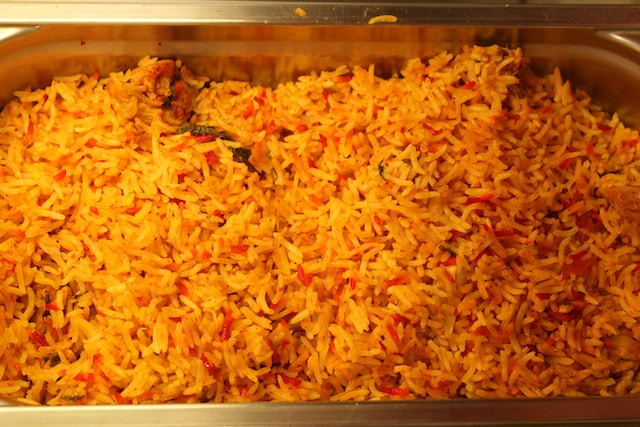

Mexican Rice Recipe

Description
This Mexican rice recipe makes a wonderful restaurant-style side dish for any Mexican dinner.
Ingredients
- 3 tablespoons vegetable oil
- 1 cup uncooked long-grain rice
- 1 teaspoon garlic salt
- ½ teaspoon ground cumin
- ¼ cup chopped onion
- 2 cups chicken broth
- ½ cup tomato sauce
Steps
- Heat oil in a large saucepan over medium heat. Add rice and season with garlic salt and cumin; cook, stirring constantly, until puffed and golden.
- Add onion; cook and stir until onion has softened. Stir in chicken broth and tomato sauce; bring to a boil. Reduce heat to low, cover, and simmer for 20 to 25 minutes. Fluff rice with a fork.